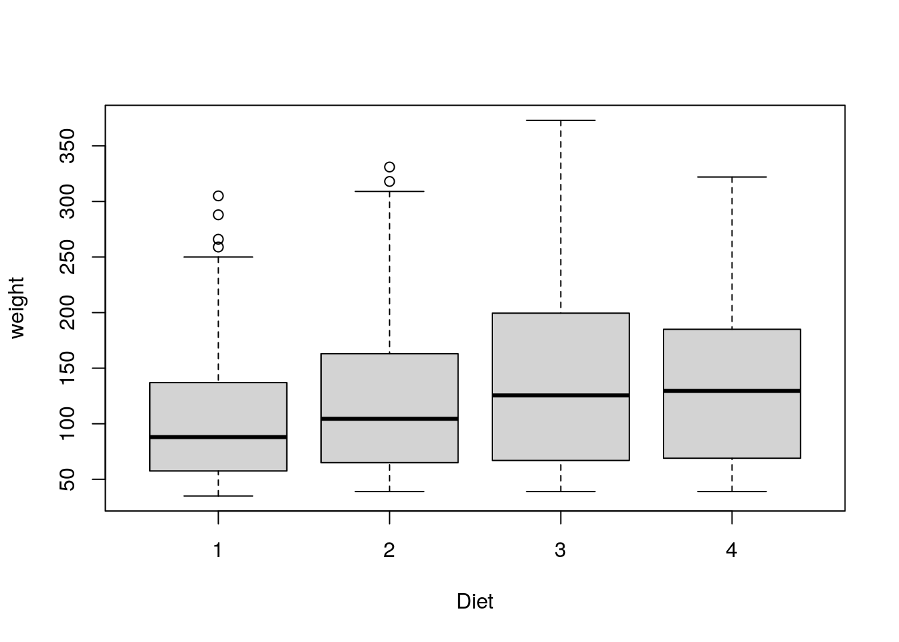

Last updated: 2022-04-26
Checks: 7 0
Knit directory: muse/
This reproducible R Markdown analysis was created with workflowr (version 1.7.0). The Checks tab describes the reproducibility checks that were applied when the results were created. The Past versions tab lists the development history.
Great! Since the R Markdown file has been committed to the Git repository, you know the exact version of the code that produced these results.
Great job! The global environment was empty. Objects defined in the global environment can affect the analysis in your R Markdown file in unknown ways. For reproduciblity it’s best to always run the code in an empty environment.
The command set.seed(20200712) was run prior to running the code in the R Markdown file. Setting a seed ensures that any results that rely on randomness, e.g. subsampling or permutations, are reproducible.
Great job! Recording the operating system, R version, and package versions is critical for reproducibility.
Nice! There were no cached chunks for this analysis, so you can be confident that you successfully produced the results during this run.
Great job! Using relative paths to the files within your workflowr project makes it easier to run your code on other machines.
Great! You are using Git for version control. Tracking code development and connecting the code version to the results is critical for reproducibility.
The results in this page were generated with repository version 9ae1c27. See the Past versions tab to see a history of the changes made to the R Markdown and HTML files.
Note that you need to be careful to ensure that all relevant files for the analysis have been committed to Git prior to generating the results (you can use wflow_publish or wflow_git_commit). workflowr only checks the R Markdown file, but you know if there are other scripts or data files that it depends on. Below is the status of the Git repository when the results were generated:
Ignored files:
Ignored: .Rhistory
Ignored: .Rproj.user/
Ignored: r_packages_4.1.2/
Untracked files:
Untracked: analysis/cell_ranger.Rmd
Note that any generated files, e.g. HTML, png, CSS, etc., are not included in this status report because it is ok for generated content to have uncommitted changes.
These are the previous versions of the repository in which changes were made to the R Markdown (analysis/dplyr_agg.Rmd) and HTML (docs/dplyr_agg.html) files. If you’ve configured a remote Git repository (see ?wflow_git_remote), click on the hyperlinks in the table below to view the files as they were in that past version.
| File | Version | Author | Date | Message |
|---|---|---|---|---|
| Rmd | 9ae1c27 | Dave Tang | 2022-04-26 | Aggregation with dplyr |
Investopedia has a good definition of an aggregate function:
An aggregate function is a mathematical computation involving a range of values that results in just a single value expressing the significance of the accumulated data it is derived from. Aggregate functions are often used to derive descriptive statistics.
In base R, aggregation is achieved using the aggregate function, which according to its help page, computes summary statistics of data subsets. I wrote a post on using the aggregate function because the function was not intuitive to me (at the time I wrote the post). In this post, I will use the ChickWeight dataset to illustrate aggregation. The ChickWeight data frame contains 578 rows and 4 columns from an experiment on the effect of diet on early growth of chicks. Use ?ChickWeight to find out more about the dataset.
data("ChickWeight")
str(ChickWeight)Classes 'nfnGroupedData', 'nfGroupedData', 'groupedData' and 'data.frame': 578 obs. of 4 variables:
$ weight: num 42 51 59 64 76 93 106 125 149 171 ...
$ Time : num 0 2 4 6 8 10 12 14 16 18 ...
$ Chick : Ord.factor w/ 50 levels "18"<"16"<"15"<..: 15 15 15 15 15 15 15 15 15 15 ...
$ Diet : Factor w/ 4 levels "1","2","3","4": 1 1 1 1 1 1 1 1 1 1 ...
- attr(*, "formula")=Class 'formula' language weight ~ Time | Chick
.. ..- attr(*, ".Environment")=<environment: R_EmptyEnv>
- attr(*, "outer")=Class 'formula' language ~Diet
.. ..- attr(*, ".Environment")=<environment: R_EmptyEnv>
- attr(*, "labels")=List of 2
..$ x: chr "Time"
..$ y: chr "Body weight"
- attr(*, "units")=List of 2
..$ x: chr "(days)"
..$ y: chr "(gm)"Groups of chicks were fed the same diet and most chicks had 12 measurements.
table(ChickWeight$Diet, ChickWeight$Chick)
18 16 15 13 9 20 10 8 17 19 4 6 11 3 1 12 2 5 14 7 24 30 22 23 27
1 2 7 8 12 12 12 12 11 12 12 12 12 12 12 12 12 12 12 12 12 0 0 0 0 0
2 0 0 0 0 0 0 0 0 0 0 0 0 0 0 0 0 0 0 0 0 12 12 12 12 12
3 0 0 0 0 0 0 0 0 0 0 0 0 0 0 0 0 0 0 0 0 0 0 0 0 0
4 0 0 0 0 0 0 0 0 0 0 0 0 0 0 0 0 0 0 0 0 0 0 0 0 0
28 26 25 29 21 33 37 36 31 39 38 32 40 34 35 44 45 43 41 47 49 46 50 42 48
1 0 0 0 0 0 0 0 0 0 0 0 0 0 0 0 0 0 0 0 0 0 0 0 0 0
2 12 12 12 12 12 0 0 0 0 0 0 0 0 0 0 0 0 0 0 0 0 0 0 0 0
3 0 0 0 0 0 12 12 12 12 12 12 12 12 12 12 0 0 0 0 0 0 0 0 0 0
4 0 0 0 0 0 0 0 0 0 0 0 0 0 0 0 10 12 12 12 12 12 12 12 12 12These 12 measurements correspond to different timepoints (days since birth) where their weight was measured.
ChickWeight[ChickWeight$Chick == 13, ] weight Time Chick Diet
144 41 0 13 1
145 48 2 13 1
146 53 4 13 1
147 60 6 13 1
148 65 8 13 1
149 67 10 13 1
150 71 12 13 1
151 70 14 13 1
152 71 16 13 1
153 81 18 13 1
154 91 20 13 1
155 96 21 13 1Aggregating weight (using mean) as a function of diet can show us whether different diets resulted in different weights.
aggregate(weight ~ Diet, data = ChickWeight, mean) Diet weight
1 1 102.6455
2 2 122.6167
3 3 142.9500
4 4 135.2627The weight ~ Diet expression is a R formula, which is commonly used to generate design matrices but can be used as a general expression.
class(weight ~ Diet)[1] "formula"The same expression can be used for boxplots.
boxplot(weight ~ Diet, ChickWeight)
However, using R formula may not be intuitive and the following dplyr approach may make more sense, especially to those familiar with the group by statement.
group_by(ChickWeight, Diet) %>%
summarise(weight = mean(weight))# A tibble: 4 × 2
Diet weight
<fct> <dbl>
1 1 103.
2 2 123.
3 3 143.
4 4 135.To aggregate with two factors.
head(aggregate(weight ~ Diet + Time, data = ChickWeight, mean)) Diet Time weight
1 1 0 41.40
2 2 0 40.70
3 3 0 40.80
4 4 0 41.00
5 1 2 47.25
6 2 2 49.40Using a dplyr approach.
group_by(ChickWeight, Diet, Time) %>%
summarise(weight = mean(weight)) %>%
head()`summarise()` has grouped output by 'Diet'. You can override using the `.groups`
argument.# A tibble: 6 × 3
# Groups: Diet [1]
Diet Time weight
<fct> <dbl> <dbl>
1 1 0 41.4
2 1 2 47.2
3 1 4 56.5
4 1 6 66.8
5 1 8 79.7
6 1 10 93.1Aggregating and calculating two summaries.
aggregate(
weight ~ Diet,
data = ChickWeight,
FUN = function(x) c(mean = mean(x), n = length(x))
) Diet weight.mean weight.n
1 1 102.6455 220.0000
2 2 122.6167 120.0000
3 3 142.9500 120.0000
4 4 135.2627 118.0000Using a dplyr approach.
group_by(ChickWeight, Diet) %>%
summarise(
weight.mean = mean(weight),
weight.n = length(weight)
)# A tibble: 4 × 3
Diet weight.mean weight.n
<fct> <dbl> <int>
1 1 103. 220
2 2 123. 120
3 3 143. 120
4 4 135. 118Aggregating on a data subset, for example only keeping chicks with 12 measurements.
chick_table <- table(ChickWeight$Chick)
my_keep <- as.integer(names(chick_table[chick_table == 12]))
aggregate(
weight ~ Diet,
data = subset(ChickWeight, Chick %in% my_keep),
FUN = function(x) c(mean = mean(x), n = length(x))
) Diet weight.mean weight.n
1 1 107.6406 192.0000
2 2 122.6167 120.0000
3 3 142.9500 120.0000
4 4 138.3333 108.0000Using a dplyr approach.
ChickWeight %>%
filter(Chick %in% my_keep) %>%
group_by(Diet) %>%
summarise(
weight.mean = mean(weight),
weight.n = length(weight)
)# A tibble: 4 × 3
Diet weight.mean weight.n
<fct> <dbl> <int>
1 1 108. 192
2 2 123. 120
3 3 143. 120
4 4 138. 108In summary, the group_by function from dplyr helps with carrying out aggregation functions within factors.
sessionInfo()R version 4.1.2 (2021-11-01)
Platform: x86_64-pc-linux-gnu (64-bit)
Running under: Ubuntu 20.04.3 LTS
Matrix products: default
BLAS/LAPACK: /usr/lib/x86_64-linux-gnu/openblas-pthread/libopenblasp-r0.3.8.so
locale:
[1] LC_CTYPE=en_US.UTF-8 LC_NUMERIC=C
[3] LC_TIME=en_US.UTF-8 LC_COLLATE=en_US.UTF-8
[5] LC_MONETARY=en_US.UTF-8 LC_MESSAGES=en_US.UTF-8
[7] LC_PAPER=en_US.UTF-8 LC_NAME=C
[9] LC_ADDRESS=C LC_TELEPHONE=C
[11] LC_MEASUREMENT=en_US.UTF-8 LC_IDENTIFICATION=C
attached base packages:
[1] stats graphics grDevices utils datasets methods base
other attached packages:
[1] forcats_0.5.1 stringr_1.4.0 dplyr_1.0.7 purrr_0.3.4
[5] readr_2.1.1 tidyr_1.1.4 tibble_3.1.6 ggplot2_3.3.5
[9] tidyverse_1.3.1 workflowr_1.7.0
loaded via a namespace (and not attached):
[1] Rcpp_1.0.8 lubridate_1.8.0 getPass_0.2-2 ps_1.6.0
[5] assertthat_0.2.1 rprojroot_2.0.2 digest_0.6.29 utf8_1.2.2
[9] R6_2.5.1 cellranger_1.1.0 backports_1.4.1 reprex_2.0.1
[13] evaluate_0.14 highr_0.9 httr_1.4.2 pillar_1.6.5
[17] rlang_1.0.0 readxl_1.3.1 rstudioapi_0.13 whisker_0.4
[21] callr_3.7.0 jquerylib_0.1.4 rmarkdown_2.11 munsell_0.5.0
[25] broom_0.7.11 compiler_4.1.2 httpuv_1.6.5 modelr_0.1.8
[29] xfun_0.29 pkgconfig_2.0.3 htmltools_0.5.2 tidyselect_1.1.1
[33] fansi_1.0.2 crayon_1.4.2 tzdb_0.2.0 dbplyr_2.1.1
[37] withr_2.4.3 later_1.3.0 grid_4.1.2 jsonlite_1.7.3
[41] gtable_0.3.0 lifecycle_1.0.1 DBI_1.1.2 git2r_0.29.0
[45] magrittr_2.0.2 scales_1.1.1 cli_3.1.1 stringi_1.7.6
[49] fs_1.5.2 promises_1.2.0.1 xml2_1.3.3 ellipsis_0.3.2
[53] generics_0.1.1 vctrs_0.3.8 tools_4.1.2 glue_1.6.1
[57] hms_1.1.1 processx_3.5.2 fastmap_1.1.0 yaml_2.2.2
[61] colorspace_2.0-2 rvest_1.0.2 knitr_1.37 haven_2.4.3